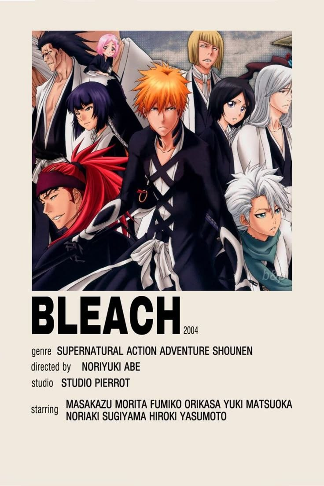

«Блич» (оригинальное название — «Bleach») — это аниме и манга, созданные Тайто Кубо. История сосредоточена на Ichigo Kurosaki, подростке с уникальной способностью видеть духов. Однажды он встречает Шинигами (Бога Смерти) Рукию Кучики, которая передает ему свои силы для борьбы с злыми духами, известными как Холлоу. С этого момента Ичиго становится Шинигами и начинает защищать мир от угроз, связанных с духами.
Ичиго Куросаки: Главный персонаж, Шинигами с уникальными способностями, который
стремится защищать людей от духов.
Рукия Кучики: Шинигами, который передал Ичиго свои силы и стал его наставником и
близким другом.
Орихиме Иноуе: Подруга Ичиго, обладающая целебными способностями и часто
испытывающая противоречивые чувства к Ичиго.
Урью Ишихара: Последний представительный квинси (охотник на духов), который был
соперником и союзником Ичиго.
Ренджи Абарай: Друг Рукии и один из сильнейших Шинигами, который зарекомендовал себя
как верный союзник Ичиго.
Ясутора Садо: Второстепенный, но важный персонаж, известный как Чад, человек с
необычной физической силой и духовными способностями, который сражается, используя силу своих рук.
Манга «Блич» была впервые опубликована в 2001 году в журнале Shueisha "Weekly Shōnen Jump". Тайто Кубо, автор манги, разработал уникальный стиль и атмосферу, что привело к мгновенной популярности. Аниме адаптация начала выходить в 2004 году и быстро завоевала сердца поклонников благодаря динамичному сюжету, интересным боям и глубокой проработке персонажей. Аниме завершилось в 2012 году, но в 2022 году было анонсировано продолжение адаптации под названием «Блич: Тысяча лет кровавой войны».